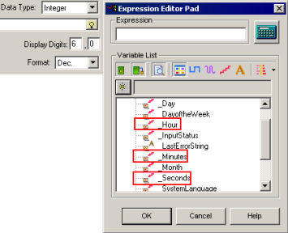

|
|
|
|
|
|
|
|
To create your own time display, you can use system variables.
Each target machine stores the current time in its internal system clock. Use the following variables to access the hours, minutes, seconds, and the time zone offset from GMT.
|
Variable Name |
Outline |
|
_Hour |
Integer variable stores the "hh" (0–23) portion of the time (hh:mm:ss) as a decimal value. An hour value of 24 is converted to 0. This variable is read only. |
|
_Minutes |
Integer variable stores the "mm" (0–59) portion of the time (hh:mm:ss) as a decimal value. This variable is read only. |
|
_Seconds |
Integer variable stores the "ss" (0–59) portion of the time (hh:mm:ss) as a decimal value. This variable is read only. |
|
_TimeZoneOffset |
Integer variable determines the local time in the target, which is calculated as an offset (in minutes) from GMT. This variable is read only. |
For more information about other system variables, see Section 6.7.2, Using Date and Time System Variables.
When you create a custom time display with system variables, first type text labels such as "hours," "minutes," and "seconds" using the Text drawing tool and then display the time stored in system variables using Value Animation.

The following section shows how to create the above time display using Value Animation.
From the Graphical Objects toolbar, select the Text icon.
Drag and draw a selection box, then click to set the Text object's area and to open the Text Editor.
Type the pound symbol [#], which will act as the time display, then click OK.
In the Text Property Inspector, define the color and font as needed.
Right-click the text object and select Animation to display the Animation Properties dialog box.
Click the Value tab, and select the Enable Value Animation checkbox.
Click the icon to open the Expression Editor Pad, and in the Variable List, select _Hour, _Minutes, or _Seconds from the menu.

Click OK. Repeat for each portion of the time (Hour, Minutes, and Seconds).

To add context to the time values, use the Text drawing tool, and add text such as "Hour," "Minutes," or "Sec."